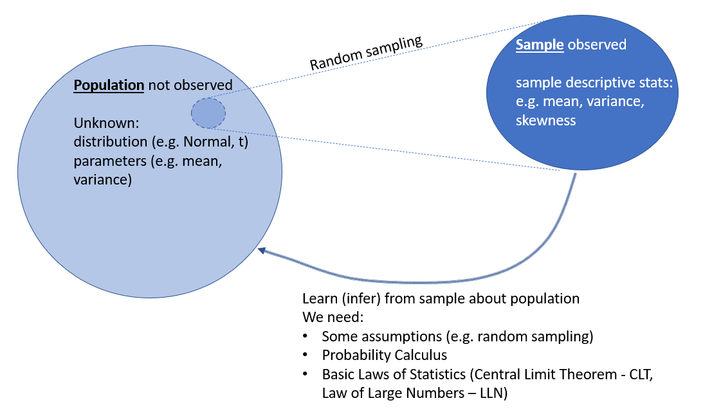

1 Introduction
1.1 An introductory example
Let’s start this with a problem. A problem which clearly illustrates why we need statistics. Put your mind back to the beginning of the Covid-19 pandemic. Very quickly after understanding the health risks by the Covid-19 virus in early 2020 attention turned to the one health tool that was very quickly identified as the “game changer” in the fight against the virus. A vaccine. In the time series plot below (Figure 2.1) you can see how often people worldwide searched for the term “Covid-19 vaccine”.
Very quickly many different research teams, in private companies, universities and government institutions started researching such vaccines. Very quickly the first companies published results of trials to investigate whether the vaccines they had developed worked. Here is a link to one of the first publication of preliminary results by the Pfizer/Biontech consortium from 18 November 2020.
In this news story you can find the following information
- “Analysis of the data indicates a vaccine efficacy rate of 95% (p<0.0001) in participants without prior SARS-CoV-2 infection […].”
- “The first primary objective analysis is based on 170 cases of COVID-19, as specified in the study protocol, of which 162 cases of COVID-19 were observed in the placebo group versus 8 cases in the BNT162b2 group.”
- “The Phase 3 clinical trial of BNT162b2 began on July 27 and has enrolled 43,661 participants to date, 41,135 of whom have received a second dose of the vaccine candidate as of November 13, 2020.”
- “Efficacy was consistent across age, gender, race and ethnicity demographics. The observed efficacy in adults over 65 years of age was over 94%.”
The information on the efficacy was pounced on by news organisations, in particular the 95% efficacy rate. Let us look at how this is calculated. There were 170 cases of covid amongst the around 40,000 trial participants. Around half the trial participants had received the Biontech vaccince (the treatment group) whereas the other half had received a placebo (meaning they also had a shot, but it did not contain any vaccine, the Control group). The numbers in the two groups were about equal (a piece of information not immediately obvious from the news story but available from other sources.)
The way how the efficacy measure is calculated is as follows
\[\begin{equation*} efficacy = 1 -\frac{\text{Number of cases in Treatment Group}}{\text{Number of cases in Control Group}}=1-\frac{8}{162}=0.9506=95.06\% \end{equation*}\]
That is the 95% figure quoted in the above news story. It gives you the reduction in probability of getting the disease by being vaccinated.
You can see that from a different perspective, using additional data from David Spiegelhalter’s excellent little book Covid by Numbers.
| Treatment Group (vaccine) | Control Group (placebo) | |
|---|---|---|
| People in group | 18,198 | 18,325 |
| Number of Covid Cases | 8 | 162 |
| Proportion getting the disease | 0.043% | 0.884% |
In the last line of the above Table you can see that the probability of contracting the Covid-19 virus in the Control Group was 0.884%. One way to think about efficacy is to think about how much this risk is reduced by having received a vaccine. An efficacy of 95% suggests that this risk is reduced by 95%, hence the risk should be 0.884%∗5%=0.884%∗0.05=0.0442% which is indeed approximately the number you see in the above table.
Here is the BBC reporting on these trial results on 9 November 2020.
Consider the data in the following table. Calculate each vaccine’s efficacy to 4 decimal places (which will be the standard precision used here). Identify which vaccine has the highest efficacy. You can assume that all results come from a randomised control trial with equal sized Treatment and Control Groups. If you calculated a 76.43% efficacy your answer should be 0.7643.
| Vaccine Name | Infections in treatment Group | Infections in Control Group | Efficacy (to 4dp) |
|---|---|---|---|
| Heal all | 5 | 134 | |
| Be careful | 11 | 109 | |
| ElderVax | 11 | 138 | |
| InlightVax | 9 | 137 |
We do not need the number of people in the survey as we assume that the numbers are the same in both groups. Therefore we can calculate the efficacy (e.g. for “Heal all”) as \(1 - (5/134) = 0.9627\). If you had different sample sizes in the experimental (\(n_e\)) and control group (\(n_c\)) you would calculate \(1-((5/n_e)/(134/n_c))\). From here you can see that \(n_c\) and \(n_e\) would cancel out if they were the same.
1.2 And where is the statistics in this?
At the completion of the course you will realise that behind these numbers there are a number of interesting questions one may want to ask.
- As we have a sample of data, can we express how certain we are about the 95% efficacy?
- The WHO demands that vaccines should have a 50% efficacy, given our uncertainty, do we believe that this vaccine if effective?
- Surely the efficacy may vary with some demographic factors (e.g. age, gender, ethnicity). Can we figure out which demographic factors make the vaccine more effective?
It turns out that statisticians can help you will these type of questions and more!
The subject of statistics is concerned with scientific methods for collecting, organizing, summarizing and presenting data (numerical information). The power and utility of statistics derives from being able to draw valid conclusions (inferences), and make reasonable decisions, on the basis the available data. (The term statistics is also used in a much narrower sense when referring to the data themselves or various other numbers derived from any given set of data. Thus we hear of employment statistics (% of people unemployed), accident statistics, (number of road accidents involving drunk drivers), etc.)
Data arise in many spheres of human and natural activity. Such data may be obtained as a matter of course (e.g., meteorological records, daily closing prices of shares, monthly interest rates, etc.), or they may be collected by survey or experiment for the purposes of a specific statistical investigation. An example of an investigation using statistics was the Survey of British Births, 1970, the aim of which was to improve the survival rate and care of British babies at or soon after birth. To this end, data on new born babies and their mothers were collected and analysed. The Family Expenditure Survey regularly collects information on household expenditure patterns - including amounts spent on lottery tickets.
Often different methods are used to effectively collect information on the same issue. Especially when the issue is very important it is often useful to have several different sources of data in order to cross-check the findings. Take, as an example, the issue of measuring how many people have been infected by Covid-19. In the UK, several sources have been used to estimate these numbers. The most attention was given to the number of positive test results reported. On the other hand, the Office for national Statistics also ran a survey across the entire population (hoping to generate a sample as representative as possible), the COVID-19 Infection Survey.
Which of the following is not an actual surveys run in the UK? Of course you are not expected to know this by heart, but you should be able quickly confirm whether these exist via a websearch.
All but the “Active Lifestyle Survey, Measuring sporting activities in UK Pensioners” surveys are real surveys. A good overview of many UK surveys is available from the UK Data Service. While the above survey does not exist, there is in fact a survey investigating the amount of activities done by people in the UK. This survey is organised by Sport England but does not specifically focus on pensioners.
1.3 What we will learn
You can divide the material you will learn in this course in three sections.
- Descriptive Statistics
- Probability Calculus
- Inferential Statistics
Let me give you short descriptions of what these sections will be about and how they will fit together. As you go through the material I recommend that you return to this short section such that you never loose sight of the bigger picture.
1.3.1 Descriptive Statistics
In this section we will look at a sample of data and use a variety of methods to describe what we see in the sample. Say you have just received the data for the 36,514 subjects in the Biontech Covid vaccine trial. Your supervisor asks you to summarise the data for her. Summarising means saying something about the data with less than the 36,514 pieces of information.
We will find ways to summarise the information with a few numbers (statistics). For instance the proportion of subjects who got infected with covid. You may also want to present some graphical ways to summarise the data. This type of activity has value in itself. In fact a lot of the data presented in the news is basically done with the use of summary statistics.
1.3.2 Probability Calculus
If you play any games like roulette, cards (e.g. poker or blackjack or even UNO) or any other games of chance you will be aware that outcomes of many events are random. Importantly, random doesn’t mean that we don’t know anything about the potential outcomes. Take a dice. Before you roll the dice you do not know the outcome, but what you do know is that the probability of each outcome is 1/6. In other words we know the probability distribution of the random variable.
In the probability section you will learn to calculate with the properties of random variables. In particular you will learn to calculate expected values, variances and correlations between multiple random variables. You will also learn about a number of common, even famous, random distributions.
1.3.3 Inferential Statistics
In some sense this is the high point of the statistical knowledge you will learn in this unit. We will often have information about a particular sample (like the sample from the Biontech vaccine trial), hopefully drawn at random. Using descriptive statistics we can find out everything there is to know about the sample (e.g. mean, variance, skewness, correlation if we have a sample on multiple variables). However, usually we are not really interested in the sample itself, the sample is merely a window into the population and we really want to know things about the population (see the schematic in (fig_inference?)). In terms of the example, we are interested in how the vaccine would work in the population.

In order to learn anything from the sample about the population we need two key tools. First, we need to be able to describe the sample (descriptive statistics) and we need to learn how to calculate with probabilities. After all we will not be able to make statements about the population with certainty, we will only be able to make probabilistic statements. Here is a video discussion of the basics of statistical inference (7.44 min).